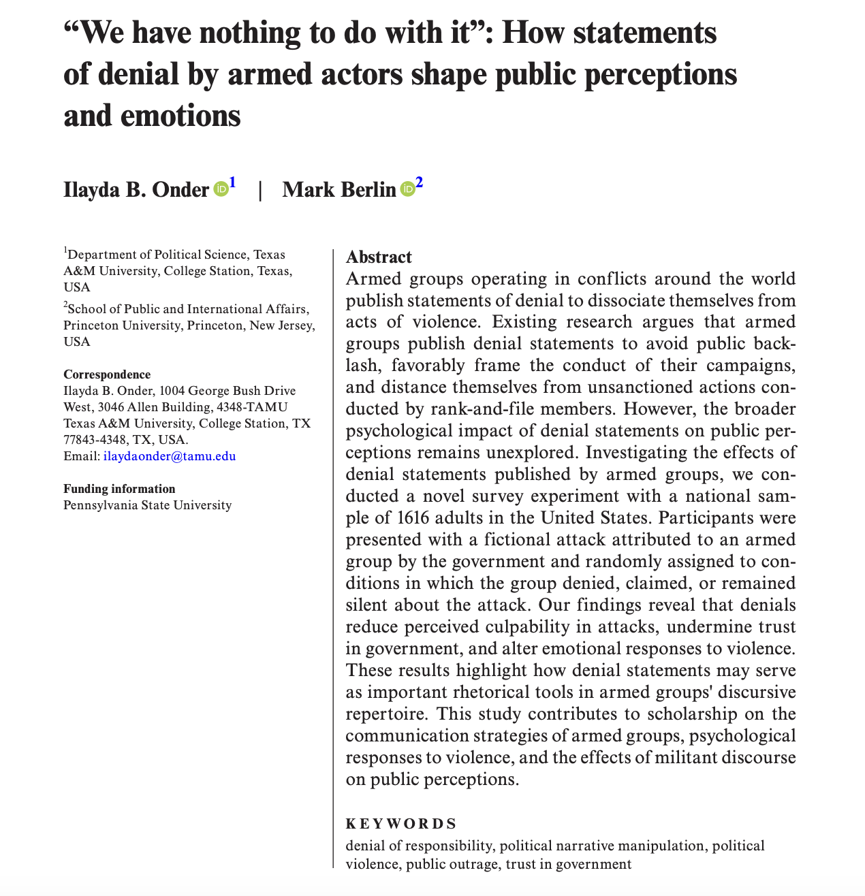
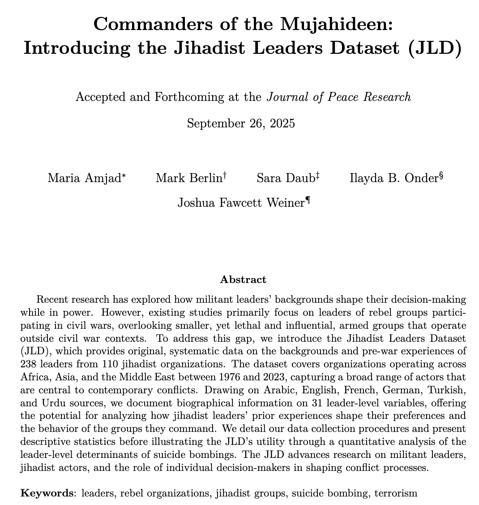
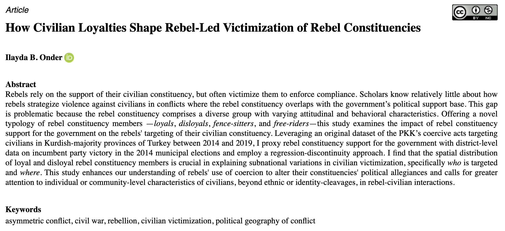
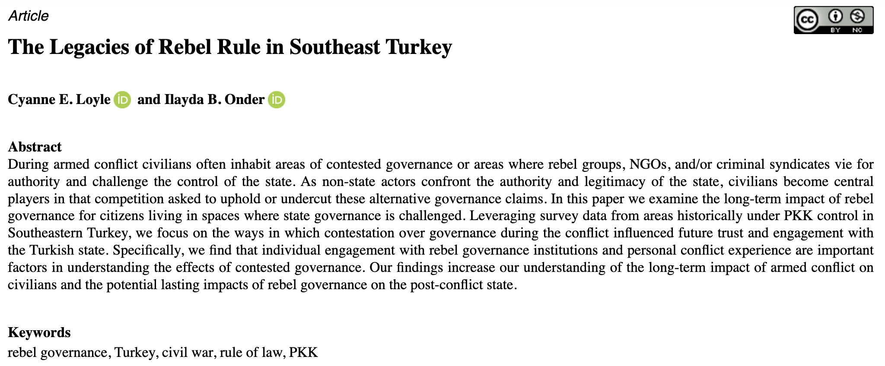
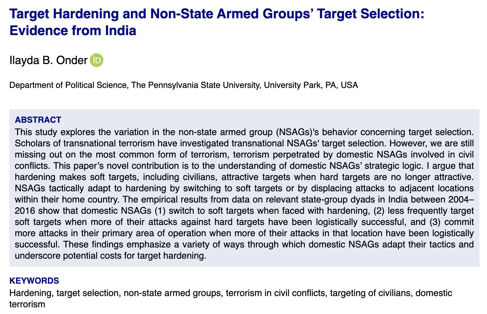
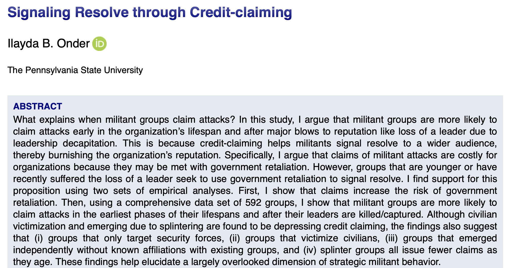

Ilayda B. Onder
Assistant Professor of Political Science
Department of Political Science
Texas A&M University
Department of Political Science
Texas A&M University
Peer-Reviewed Publications
7
How Statements of Denial by Armed Actors Shape Public Perceptions and Emotions
Ilayda B. Onder and Mark Berlin
Political Psychology.

6
Commanders of the Mujahideen: Introducing the Jihadist Leaders Dataset (JLD)
Maria Amjad, Mark Berlin, Sara Daub, Ilayda B. Onder, and Joshua Fawcett Weiner
Journal of Peace Research.

5
Credit Claims and the Survival of Terrorist Organizations
Ilayda B. Onder, Nazli Avdan, and Aaron Hoffman
International Interactions.
4
How Civilian Loyalties Shape Rebel-led Victimization of Rebel Constituencies
Ilayda B. Onder
Journal of Conflict Resolution 69 (4): 701-730

3
The Legacies of Rebel Rule in Southeast Turkey
Cyanne E. Loyle and Ilayda B. Onder
Comparative Political Studies 57 (11): 1771-1803

2
Target Hardening and Non-State Armed Groups' Target Selection: Evidence from India
Ilayda B. Onder
Terrorism and Political Violence 36 (8): 1105-1126

1
Signaling Resolve through Credit-claiming
Ilayda B. Onder
International Interactions 49 (5): 755-784
